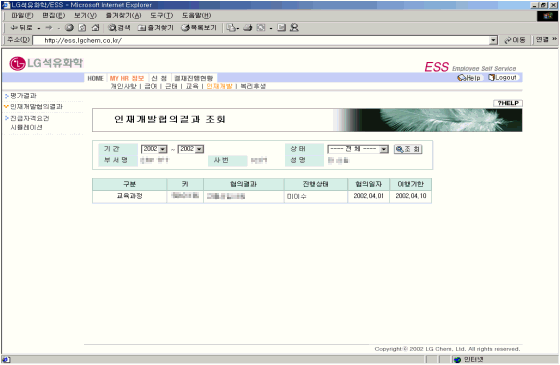

| Ⅰ. 개요 및 신청절차 |
| 1. 개요 |
| 인재개발협의를 실시한 후 각 인재위 간사가 협의결과를 system에 등록하고 이행했을 경우 각 부서장이 이행상태를 변경하며, 개인은 등록된 결과를 조회한다. |
| |
| 2. 절차 |
|
|
| |
| |
| Ⅱ. 화면사용법 및 유의사항 |
| <그림 1. 인재개발협의결과 조회 화면> |
|  |
| |
| 1) 개인의 인재개발협의결과 내역을 조회한다. |
| 2) 각 항목별로 이행상태를 확인한다.(계획, 완료, 이수 등) |
| 3) 교육과정을 제외한 조직단위나 직무의 경우에 시작일과 종료일은 인재개발협의 일자부터 이행계획 |
| 기간을 나타낸다. |
|
| |
| |
| Ⅲ. 제도소개 |
| 향후 사업Needs에 필요한 차세대 리더의 조기 발굴 및 체계적 육성을 통해 Leadership의 지속성을 확보하고 구성원의 성장Vision을 가시화함으로써 인재육성의 실행력을 제고하기 위하여, 각급 인재개발협의체에서 성과와 성장Potential이 우수한 인재를 선발하여 육성면담을 실시하고 실행사항을 관리하는 System임. |
| - 인재개발위원회 : 임원Post별 후계자 후보를 선발하여 육성 |
| - 인재개발소위원회 : 팀장급Post별 후계자 후보를 선발하여 육성 |
| - 인재개발분과위원회 : 과장~대리급 중 성과와 Potential이 우수한 |
| 인원에 대한 교육 및 경력개발 사항 협의 |
| |
|